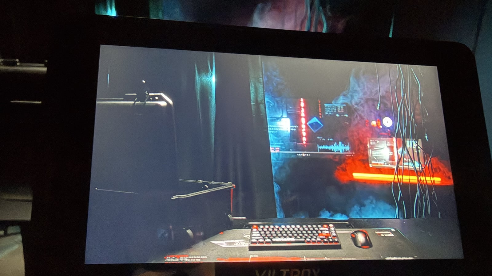
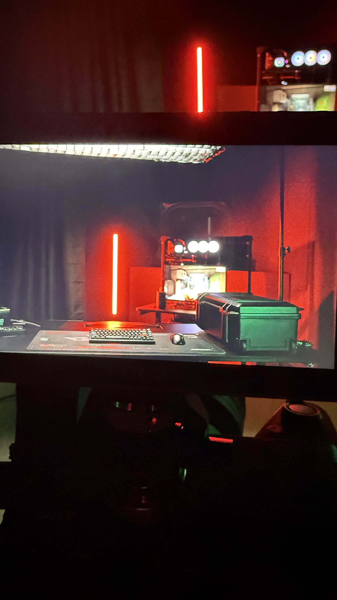
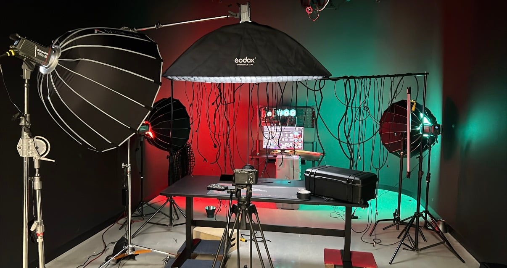
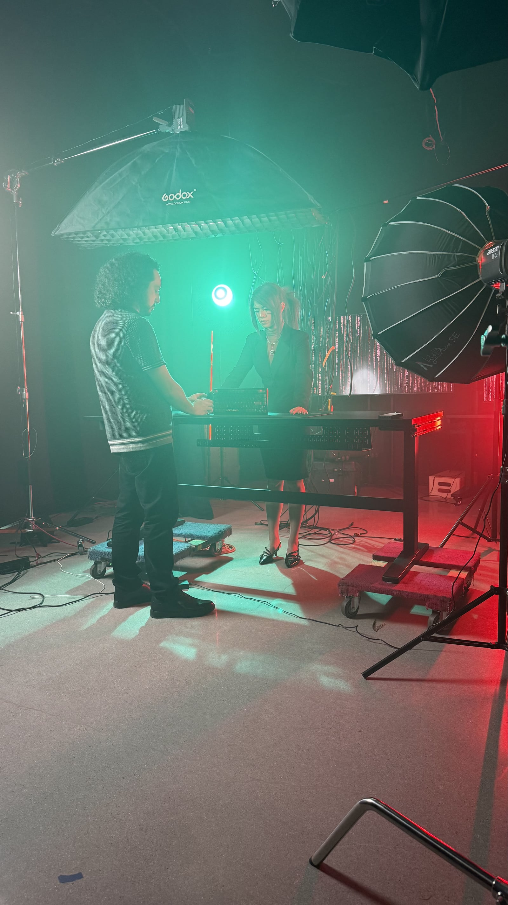
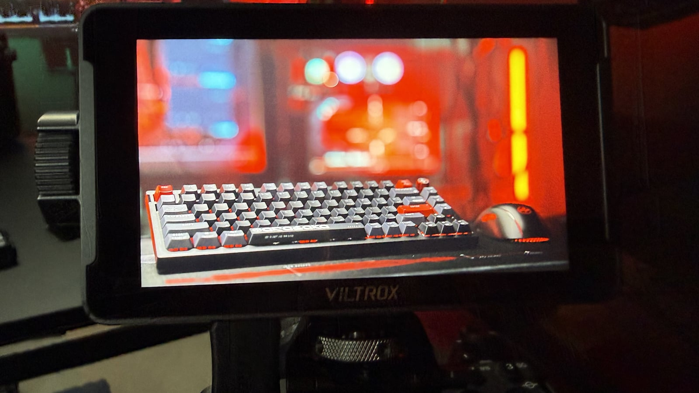
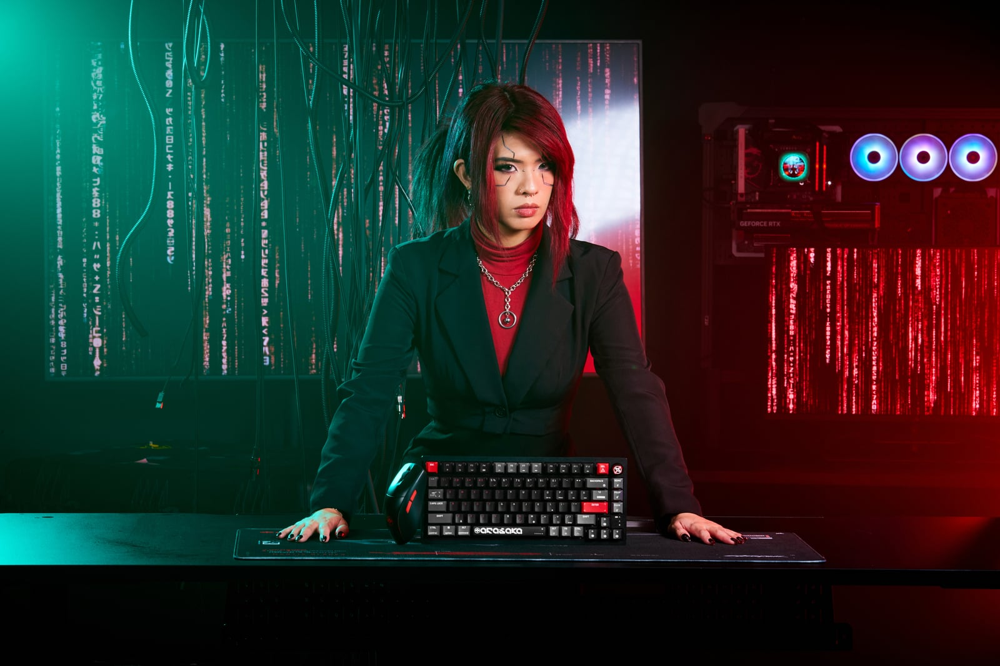

Cyberpunk 2077

01 — Approach
Night City is the most photographed fictional city of the decade. The only way to make it feel new was to stop photographing it and start surveilling it: hard angles, held frames, cuts timed to the electrical hum of the signage rather than the music. The audience shouldn't feel like a tourist. They should feel watched.


03 — On set
Practical neon wherever possible. Real light wraps around skin in a way comp never does — and the actors play differently when the set glows back at them.



04 — The cut
The most contested fourteen frames of the edit. Drag the wipe: the alternate assembly held the wide; the shipped cut punches in on the turn — colder, closer, more surveilled.

05 — Outcome
Delivered as the flagship spot of the campaign window — broadcast, pre-roll, and in-store wall loops, with the cutdown family derived from this master.